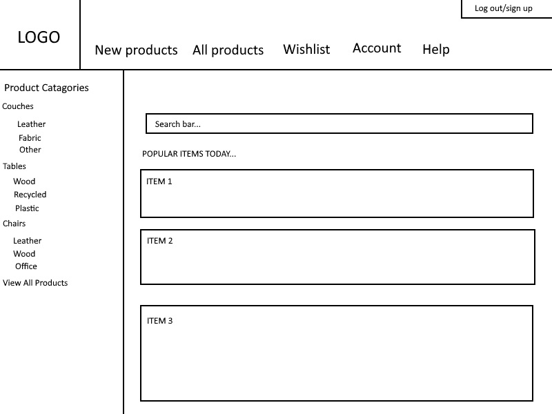
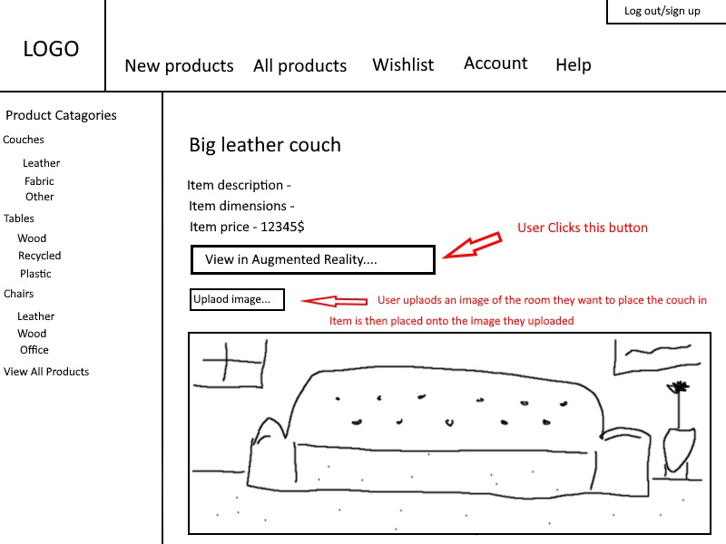

The Team
Marcus Lew - s3821420
Background and Passion in IT
I’m Marcus, I was born in Melbourne, Australia. I speak English and a bit of Cantonese as my family background is from Hong Kong. Graduated VCE at Carey Grammar and am now studying Bachelor of Information Technology. I love to play the guitar and piano, particularly jazz and classical. I am also an avid gamer! My passion in IT grew from the first time I built my PC in 2018, and using different gadgets that integrate cloud for seamless control from my phone.
What are you good at/interested in?
My strong points centre around Networking. Playing around with Cisco Packet Tracer I’ve learnt the basics of route and switch commands on Cisco devices. My main interests are the cloud, and IT for aesthetic purposes. Whether it is fancy lighting controlled from your phone or colourful PC components, if it looks good I’m all for it!
What are your weaker points in the context of the project needs?
My current HTML and CSS skills are quite basic, I look to further my knowledge in that department through this project. I also hope to gain some hands on experience working with either PHP or Javascript to add some functionality to this project’s site.
What role do you expect to be performing in the project?
I see myself predominantly working on the coding side of things, however am open to cycling through other roles so all team members may have experience with different tasks.
Arjun Sharma - s3604973
Background and Passion in IT
I'm Arjun and my parents immigrated to Australia in 1990 from India and had me in 1997. I can speak Punjabi and English. I graduated highschool in 2015 from Westbourne Grammar School. I've always had an interest in techology and software. I enjoy playing video games such as Super Smash Bros. Melee and Pokemon TCGO. I've been playing field hockey since I was 8 years old.
What are you good at/interested in?
I am interested in many aspects of IT. Coding and software development is tough but very rewarding when completed and is one of my interests. Also web devolpment is something that I enjoy doing as it allows for a bit of creativity. Web security looks interesting but it is not something I want to persue in the future.
What are your weaker points in the context of the project needs?
I find deadlines and report writing to be my weaker aspects. I need to work on fulfilling requirements as per the criteria and staying focused on the tasks ahead.
What role do you expect to be performing in the project?
I expect to be on the technical side of this project while also doing my share of report writing. I feel more confortable with coding and development
Chris Priskas - s3781828
Background and Passion in IT
My background is Greek/Irish. My passion in IT is how IT is implemented into making video games. My hobbies are playing video games, and playing basketball.
What are you good at/interested in?
My strong points are that I am pretty decent at writing and explaining things, I am also not that bad at html. I am interested in the design aspects of websites and video games, and how IT helps with this.
What are your weaker points in the context of the project needs?
My weaker points are coding, so for our project, it will be difficult to help contribute to coding part of the AR
What role do you expect to be performing in the project?
My role will be to do some of the theory work, and also help on making parts of the website

Nicholas Santosa - s3844591
Background and Passion in IT
I was born in New Zealand, Auckland on March 23rd, 2002, Saturday. Since 2007 and onwards I've been living in Melbourne and grew up in an Indonesian household. My first language is English and I'm somewhat fluent in Bahasa (Indonesian). I'm currently undertaking a Bachelor of Information Technology at RMIT and I'm in my first year. I have finished school from Prep to Year 12. I went to Stella Maris in Point Cook for my Primary school and moved to Emmanuel College Notre Dame Campus from year 7 to 12. I enjoy finding out how computers and the technology we use today works and how I can improve people's daily lives with this knowledge of the current technology.
What are you good at/interested in?
My strengths are communication skills, being organized, problem solving, research skills and being resourceful. I have experience in Python, Game Maker and Visual Basic. I'm interested in mostly the coding parts of a project.
What are your weaker points in the context of the project needs?
I would need more work on my CSS, creativity skills and leadership. I wouldn't mind developing any part of the project because I need overall experience in a project's life cycle, but I would like to be more a part of the code.
What role do you expect to be performing in the project?
I see myself doing the code for the project, but I would like to do all the different parts of the project at different times and not be stuck to one specific part of the project.
Joshua Kreppold - s3838911
Background and Passion in IT
I come from Melbourne and have been here my whole life. After finishing year 12 at Yarra Hills Secondary collage I have moved on to studying IT at RMIT Uni. I have to say my passion for IT stems from the fact I have always been close to and enjoyed using technology. What I find interesting and one of my main motivators for pursuing this industry is the many ways in which IT impacts our daily lives. Technology is all around us and affects us in many ways, and I really like the idea of being in the process of using, creating, and understanding this new and current tech.
What are you good at/interested in?
Currently, I have had some experience varying around the field. In year 12 and 11 I took the VCE IT courses which were good and gave me some experience in the general IT field. (Touching on basic coding with HTML, CSS, and PHP7 plus additional principals and knowledge).
What are your weaker points in the context of the project needs?
I have also finished my first semester at RMIT which has already done so much for me in improving my weak points. Reflecting on myself i'd like to continue getting better at writing code as I am still only a novice. I am also hoping that as apart of this project in Building IT systems I will get better at my time management, research, and team skills. I believe the biggest challenge that will come from this project will be time management.
What role do you expect to be performing in the project?
Completing my allocated work for my group before our meetings. This is also one of my main goals, to stay on top of my workload. Tasks that I will be assisting in for my team ‘Groopname’ will be the completion of the “When section” and working with AWS. Other than that I will be assisting in any extra tasks I can, and would love to be involved in writing the CSS and HTML In the project.

Jacob Bell - s3782072
Background and Passion in IT
General white European, i like playing video games and watching movies and have a strong dislike for programming. i like building expensive computers then using them to watch youtube videos.
What are you good at/interested in?
I am pretty good at explaining concepts and ideas both in text and through presentation, i enjoy and have an interest in design and creating functionality for products or ideas.
What are your weaker points in the context of the project needs?
Anything to do with programming, i am defiantly not terrible at it but overall i find it uninteresting and sort of boring. as a result i would like to develop skills in such a field hopefully over the period of this course. Some challenges may arise specifically in the programming section for the development of our website as most of us are fairly inexperienced in said work, despite this we should be able to complete our set project to a high standard.
What role do you expect to be performing in the project?
I could see myself performing and undertaking the design and theory based sections of our assignment as i believe i am fairly proficient in both, i could also help with some of the programming but am relatively inexperienced with it and as such may cause some problems with the project overall.
Project Description
Project Overview
Our overall project idea is to create an online ecommerce website that will specialise in selling home electronics but with an additional feature focused around augmented reality, more specifically the implementation of augmented reality in the context of virtually placing a furniture item within an image or images uploaded by a user, giving said user a better idea of how the electronic products would look and fit within their own home. Besides that feature our website will contain all the normal features expected of a conventional ecommerce website.
Project Functionality and details
The augmented reality functionality will operate based upon two sets of information, the first being the item a specific user selects to view on the store and the second being the image(s) uploaded by the user of the room they wish to place said item. The item itself will be a 3D model that can be moved around the space by the user on top of the static image they have uploaded, the object will have set dimensions specific to those present within the item description. Due to this when the user uploads an image they will need to detail the dimensions of the room or a specific item in the room to allow the 3D model to be scaled correctly and give a better overall user experience. Although that will be our primary innovative feature we have added a few more conventional ecommerce website features to consider with the AR idea, those being as follows, a normal item search feature, a conventional purchase page, the ability to upload images and a wish list feature.
Below are a few diagrams and user stories to help better represent our project idea.
 User stories
User story 1
As a user I want to be able to view a list of Televisions or other electronic products i could potentially want to purchase so that i may have some new items in my house, and would like to view how said product would look within a room in my home.
Acceptance criteria -
- I know I have completed my goal when I was able to easily access a list of items with specific categories, one such being my specified item description.
- I want to be able to clearly view a list of said items with ability to order by price or color.
- When I select a certain wooden table I am interested in I wish to be brought to a page with detailed information about said product including dimensions, manufacturer and a detailed description of the product.
- I wish to be able to upload an image of a room in my home, give some dimensional details about said room and have the ability to view the table through augmented reality within my uploaded image.
User story 2
As a user who wants to purchase a large amount of electronic items to help modernize my house, I wish to be able to search for multiple items without having to select a specific category on any form of menu, and add said items to my cart.
Acceptance criteria -
- I wish to be able to easily find the page in which I can search for any item currently available on the website.
- When i search for a product i wish to see i want the top results to be the most popular items available.
- I want to be able to filter these items by price or manufacturer.
- When i click on an item i wish to purchase i want to be able to add said product to my cart and have the ability to continue shopping.
- When i have added enough items to my cart i wish to checkout all three items at once, adding the total costs together
User story 3
As a user who is unsure about where i would like to place a time i wish to purchase, i want to be able to upload as many images of rooms as i wish and display the same product within said images.
Acceptance criteria -
- I wish to be able to upload images one after the other without the system faulting.
- I wish to be able to upload images, fill out any dimensional information and view an Augmented reality image with my selected product appearing in my uploaded image without the system faulting greatly
- I wish to perform this act as many times as I wish, uploading new images of different rooms each time and do not want the system to crash.
- When i refresh the page i want none of my uploaded images to be saved on the page.
Demonstrable Outcomes
Project Motivation
Our Motivation
The Motivation for this project is that we wanted to be able to know which particular item you may want in your house, such as a fridge or tv, so we want to make it easier to decide and we thought the best way to show this was to be able to test these items in the house and see how it looks. So AR allows us to put the items in our house and see if it looks good in the house, so we would know if we would want to buy it or not. Another Motivation is that because of being in lockdown, we have to order online, and can see the items in store, so it makes it easier to decide what we want if we can see it in our house.
Collective Interests
It relates to our interests because AR is very interesting and intriguing to everyone, ,AR is also beyond our IT knowledge, so in doing this project, it will advance our IT skills, since this is a whole new area that we would hopefully know how to do after the assignment is completed.
Minimum Viable Features
Shopping Cart
There will be a shopping cart feature, so any item you want to buy, you can put it in your shopping cart, and when you are ready to checkout, you can buy all these items at once. This will be tested by making sure when you want to purchase an item, it will be added to the shopping cart.
Search Bar
A search bar where you can search for an item, if the store has the item, when you search the item will appear and you can view it, if the item is not in the store, nothing will appear. To test this, when we search for an item, it will need to appear when that item is searched for.
Wish List
There will be a feature where you can wish list certain items, so if you wishlist the item it will be placed into your wishlist, and you can come back and view that list at a later date if you decide to eventually buy that item. To test this, we will need to wishlist items, and see if the item goes into the wishlist.
Database of Items
A database of items is another feature, so this feature has all the items in the store on it, and it keeps track of all the items in the store. To test this feature we would need to make sure the website has track of all the items, by looking at the database, and when an item is sold, that number of items in stock decreases, so we would need to make sure the database is tracking that by seeing if the number drops.
Upload Photo
Another function is an upload photo option, since this will be a website, so you would need to upload an image so you can use the AR, so this feature will be the uploading of the picture. To test this, we would need to take a photo, upload it and see if the photo is uploaded correctly, and everything with the photo is good to go.
Superimpose Items
The final function is to superimpose items, so put in the different items and test them in the image you have uploaded, so you are able to see if the product is how you want it to look in your house when using the AR. To test this, we would have to upload a photo, so that function would have to work, then we would have to put the item into the image, and see if it would work as intended.
Extended Viable Features
Customer Account
An extended feature is a customer account, so the customers can have an account, to test this, we would need a sign in page where you can create an account, and see if creating an account actually works.
Automatic Space Detection
Another extended feature is automatic space detection, so this feature would not allow the items placed into the picture to be placed in certain spots, maybe because it would not fit there, so this would detect the space around it so you can place it in a spot the item can be placed in. This would be tested by making sure when the item is implemented it will detect the environment around it.
Full Checkout Function
The final extended feature is a full checkout function, so a checkout where you put in your details, address, payment method and actually buy the item. To test this, we would need to test all the different features a checkout function would have, we would need to make sure address and info can be entered and that a payment method can be entered and the payment goes through.
Project Justification
Workload
Our groups project schedule is to work on specific parts of the project each week, so in the first week we will work on search filters, then wish list, then the shopping cart, then the database of items, then the upload photo section and finally the superimpose items, and if we have time we will work on the extended features, which would be a customer account, an automatic space detection system and a full checkout function. So we would all append time working on these parts of the assignment, and work on it 5 hours a week, and if we finish it before the 5 hours, we can start the next section so maybe we would have extra time for the extended features.
Beyond Current Capabilities
Our current knowledge is more on the basic side of coding, and some know a little more, but one area where we barely know anything is coding to do with augmented reality, so hopefully when we have completed this project, our knowledge of coding is expanded, and mainly towards augmented reality.
Risks
Project Risks
Project risks may be that the AR does not work or look as well, so when the certain items are placed into the environment, it does not look well, and does not give a good representation of what the product would look like. To minimise this issue, we would have to constantly try and see how it looks while working on it, and use the time we have to make sure that it looks good.
Another project risk may be that tools we use may not work as intended, or may become unavailable to us whilst working with it on the project. To minimise this risk we would need secondary tools to use just in case, and one hopefully where we can easily transfer everything we have done over.
Another project risk is that when we have done the coding, certain features may not be working property, so this could result in team members trying to solve the issue, but not being able to, adn this would delay the project.To minimise this issue, we have to make sure we keep testing this features as we are coding them, and make sure it is fully working before moving on.
Project Challenges
Project challenges may be not knowing how to code the AR, so as a group we may struggle with getting this to work, since it is more complicated coding. This challenge is hard to minimise, but the best way to minimise the challenge is to prepare before doing this, and trying to learn how to do it early on.
Another project challenge may be a team member not doing their work, this would delay the progress of the assignment, to minimise this the group could have multiple people doing one thing, or making sure people show how much work they have done regularly.
Another Project challenge may be team members not being able to attend meetings for some reason, if this happens it could potentially delay the project, to minimise this issue, we should make sure that that everyone can attend the meeting prior to the meeting and if not to reschedule the meeting so everyone can attend.
How
Resource & Tools
Notepad++ - As this project will be based on a website we will need some form of advanced text editor to edit and store HTML5, CSS and PHP files and code. As such as a baseline we have decided to use Notepad++ although it doesn't really matter what text editor each person uses, as long as the file type is readable by each member and can be placed on each workspace with ease. We will be using the most recent version of this software (V7.8.9) and it is also completely free. Other text editors our group members may use include Microsoft visual studio code or others depending on individual needs.
Link - Notepad-plus-plus.org
Amazon web service - Again, as our project will be held on a webpage we need a solution to issue regarding hosting said webpage, as such we have chosen as a group to use AWS for such a task. We are all fairly familiar with the software as we have used it in previous classes and overall it is fairly easy to use and learn for anyone who has not used it before. The service allows us to upload all the code and images and other files onto one place and use the software as a server in which anyone with access may enter, it is also free. Some other solutions may be to use the RMIT servers or to find another server hosting platform, but they might be fairly costly in comparison.
Link - AWS.amazon.com
Blender - at some point in our project's development we may need to create 3D models for some of the items held within our virtual store and as such we will need to create said models. At this point we are not entirely sure which program we should use for this step but blender is a good starting point and fits our requirements of being free and fairly easy to use. We will be utilizing the most recent version of blender, or similar 3D modelling software for our assignment.
Link - Blender.org
General technology - as we are performing this project collaboratively but completely online and without any physical contact we, as a group, will need to utilize communication software and physical technology to communicate with each other. Microphones and cameras will be needed to hold our group meetings to the highest possible standards and computers powerful enough to render and create 3D models will also be necessary for the overall completion of this project. At this point in time every group member currently possesses the necessary technological tools to complete the project to a very high standard.
Collaborative Workspaces
Trello - Our trello board is a group specific space in which each group member may set personal and group goals for the project, we may upload files and share information on each person's work. Overall it provides a hub for everyone to gather their thoughts and better understand where everyone is on their individual project work. Our trello board is accessible through the link below.
Link - Trello - GroopName
Microsoft teams - Our microsoft teams group page is where we are able to host and record all of our team meetings as well as discuss anything we wish to share through text or simple file uploads. Overall it is a space more inclined for immediate questions or concerns any group member may have about the project and allows us to hold discussions within one area. The link below will allow access to our microsoft team group page.
Link - Microsoft Teams - GroopName
Github - Our github page will be used to upload and store any code or images or files that will be used for our project, this includes both final files and ones that are yet to be completed. Having a github group allows us to store all important project information and work within one space and allows for easy access to said information for every group member. The github can be accessed from the link below.
Link - Github - BITS-GroopName - GroopName
AWS - as we will be creating a webpage we need a place to host it, as such we will be utilizing Amazon web services to do such a thing, AWS basically allows us to upload all our final code and images and other project related files to one place and host it on their servers, allowing access to anyone we allow, such as other group members and teachers. Our AWS page can be accessed through the link below.
Communication Expectations
Decision-making Processes
When
Minimum Viable Features
MVF 1 - Search Filters
Trello Link - Description
Trello Link - Artefact
Lead by: Chris. Start Date: 24/8 - Monday. Due Date: 30/8 - Sunday.
MVF 2 - Wish List
Trello Link - Description
Trello Link - Artefact
Lead by: Marcus. Start Date: 24/8 - Monday. Due Date: 30/8 - Sunday.
MVF 3 - Shopping Cart
Trello Link - Description
Trello Link - Artefact
Lead by: Nicholas. Start Date: 7/9 - Monday. Due Date: 13/9 - Sunday.
MVF 4 - Database Items
Trello Link - Description
Trello Link - Artefact
Lead by: Arjun. Start Date: 7/9 - Monday. Due Date: 13/9 - Sunday.
MVF 5 - Upload Photo
Trello Link - Description
Trello Link - Artefact
Lead by: Jacob. Start Date: 14/8 - Monday. Due Date: 20/8 - Sunday.
MVF 6 - Supermimpose Item
Trello Link - Description
Trello Link - Artefact
Lead by: Joshua. Start Date: 21/9 - Monday. Due Date: 27/9 - Sunday.
Extended Viable Features
EVF 1 - Customer Accounts
Trello Link - Description
EVF 2 - Automatic Space
Trello Link - Description
EVF 3 - Full Checkout Function
Trello Link - Description